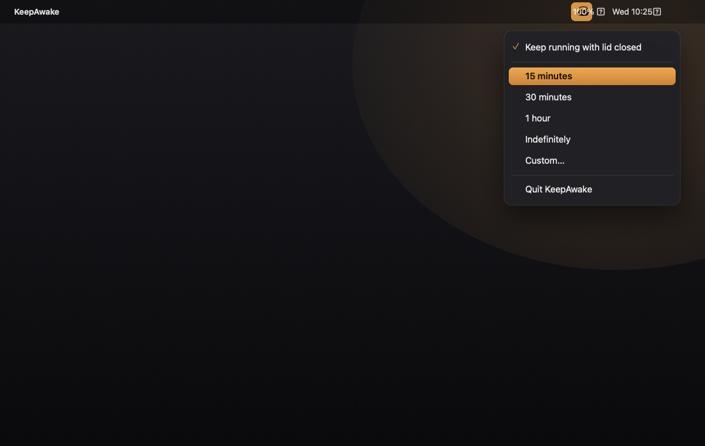

A tiny menu-bar app that stops your Mac from sleeping — for 15 minutes, an hour, or as long as you want. Closed-display mode included. No Mac App Store, no Apple ID.
Apple Silicon & Intel · macOS 13+ · ~250 KB
KeepAwake is a free, open-source macOS menu-bar app that stops your Mac from sleeping.
You click the coffee-cup icon in the menu bar and choose how long to stay awake — 15 minutes, 30 minutes,
1 hour, indefinitely, or a custom time you type in. With its closed-display mode enabled, KeepAwake also
keeps the Mac running with the lid closed, without an external monitor, by setting macOS's
disablesleep power flag. When you stop it, every setting reverts to the macOS default, so it
never leaves your Mac unable to sleep. Unlike Amphetamine, KeepAwake installs without the Mac App
Store and without an Apple ID, which makes it a practical choice on locked-down or managed work
Macs. It is a tiny native app (about 250 KB), runs on both Apple Silicon and Intel, and requires
macOS 13 (Ventura) or later. Built and maintained by Abhinav Ranish.
See it in action
Pick a duration, keep the lid-closed option checked, and you're set.

Everything you need
Click the cup in your menu bar, pick a duration, and get on with your work.
Stay awake for 15 minutes, 30 minutes, 1 hour, indefinitely, or any custom time you type in.
Keep the Mac running with the lid shut — no external monitor required. The signature Amphetamine feature.
Hit Stop and everything returns to macOS defaults. It never leaves your Mac unable to sleep.
Launches quietly at login and lives in your menu bar. One small, focused coffee cup.
Installs without the Mac App Store or signing in. Built for locked-down work laptops.
Optional Touch ID or a tightly-scoped passwordless rule for the one admin step lid-mode needs.
Comparison
KeepAwake vs. Amphetamine vs. the built-in caffeinate command.
| Feature | KeepAwake | Amphetamine | caffeinate |
|---|---|---|---|
| Price | Free | Free | Free |
| Open source | ✓ Yes | ✕ No | Built into macOS |
| No Mac App Store / Apple ID needed | ✓ Yes | ✕ Needs both | ✓ Yes |
| Timed durations (15m / 1h / custom) | ✓ Yes | ✓ Yes | Manual flags only |
| Closed-display (lid-closed) mode | ✓ Yes | ✓ Yes | ✕ No |
| Menu-bar interface | ✓ Yes | ✓ Yes | ✕ Terminal |
| Auto-start at login | ✓ Yes | ✓ Yes | Manual setup |
Download
All free. All open source. Grab the latest release.
The Swift source & install scripts. Build it yourself with bash install.sh.
First launch
KeepAwake isn't notarized by Apple (no paid Developer ID), so macOS asks you to approve it once. Totally normal.
Double-click KeepAwake.app. macOS says it "could not verify" it — click Done (not Move to Trash).
Open System Settings → Privacy & Security, scroll to Security, and click Open Anyway next to KeepAwake.
Authenticate with Touch ID or your password. The ☕ appears in your menu bar — you're set.
Run bash install.sh for auto-start, and sudo bash grant-admin.sh for silent (no-password) lid-closed mode.
Questions
Yes — it's fully open source. Read every line on GitHub before you run it. It only calls Apple's own caffeinate and pmset tools, and reverts to defaults when you stop it.
Because it isn't notarized with a paid Apple Developer ID. The "Open Anyway" step in System Settings → Privacy & Security is how you approve it. After the first time, it just opens.
Yes. It sets macOS's disablesleep flag (the same mechanism Amphetamine uses), so the Mac keeps running with the lid shut — no external display needed. Stopping it restores normal lid-sleep.
A closed lid traps heat, so it's great for downloads, builds, or keeping a connection alive, but use caution under sustained heavy CPU/GPU load. Keep it plugged in for long sessions.
Amphetamine is excellent — but it's Mac App Store–only and needs an Apple ID, which isn't always possible on locked-down work machines. KeepAwake delivers the same core feature with no App Store and no sign-in.